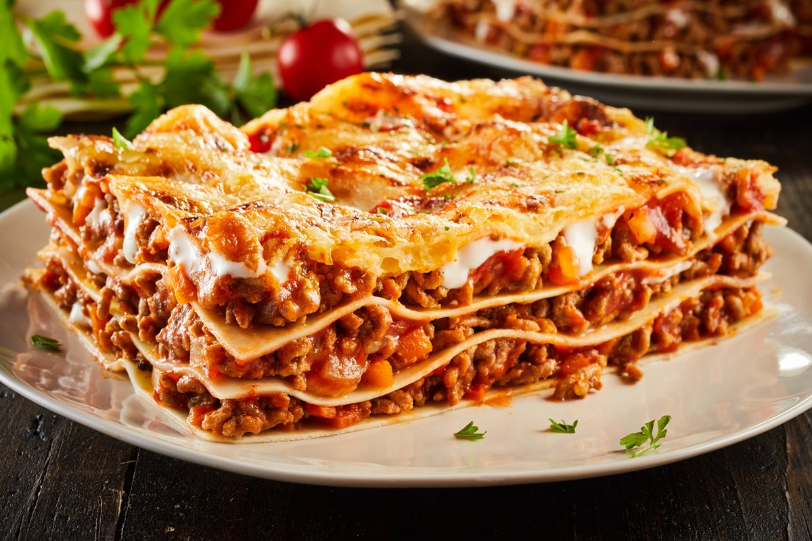

Lasagna

Description
Lasagna is a wide, flat sheet of pasta. Lasagna can refer to either the type of noodle or to the typical lasagna dish which is a dish made with several layers of lasagna sheets with sauce and other ingredients, such as meats and cheese, in between the lasagna noodles.
Ingredients
- 450g / 1lb of lean minced beef
- medium onion
- 1 medium green or red pepper
- 8 button mushrooms
- 1 x 400g / 14 oz. tin of chopped tomatoes
- 2 dessertspoons of tomato sauce
- 1 clove of garlic
- 10 sheets of easi-cook lasagne sheets
- Salt and pepper, to taste
- Cheese sauce
Steps
- Pre-heat the oven to 180°C / 350°F / Gas Mark 4.
- Chop the onions, pepper, mushrooms and garlic.
- Take a look at our top tips on cooking with mince, then put the mince into a large pan and fry until completely brown, stirring all the time with a wooden spoon.
- Drain off any excess fat before adding onions and garlic to mince and cook for 3 to 4 minutes.
- Add the chopped peppers, mushrooms, tin of tomatoes and tomato sauce to the mince mixture.
- Bring to the boil and leave to simmer on a low heat for 15 to 20 minutes.